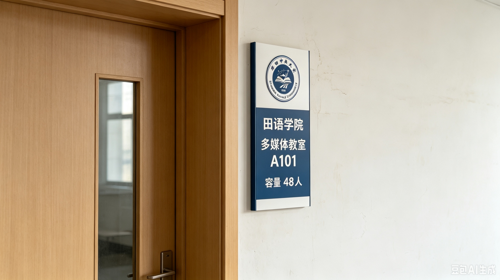

田语学院
College of Rincatian Language
创办时间
2020年
本科专业
3个
在校学生
480人
教职工
56人
学院简介
田语学院成立于2020年，是全国唯一的田语专业院系，也是华田中央大学最具辨识度的特色品牌学院。学院专门研究本土自创语言田语（Rincatian），致力于田语的传承、研究与推广，培养田语专业人才。田语（师范）专业为国家级特色专业，是学校的王牌专业。
田语是华田地区的本土自创语言，拥有独特的语音系统、语法体系和文字形式。学院以保护和传承田语文化为使命，深入开展田语语言学、文学、文化等领域的研究，推动田语的标准化、规范化和现代化发展。
专业设置
学院设有3个本科专业，涵盖田语语言、师范教育和翻译方向：
- 田语 — 培养具有扎实田语语言基础和田语文化素养的田语专门人才，国家级特色专业
- 田语师范 — 培养具备田语教学能力的高素质田语教育工作者，国家级一流本科专业
- 田语翻译 — 培养具有田语与汉语互译能力的专业翻译人才，服务田语文化传播
师资力量
学院现有教职工56人，其中教授8人，副教授15人。汇聚了国内外顶尖的田语研究学者，包括多位国家级田语研究专家。学院还聘请了多位田语母语者担任外籍教师。
学院师资队伍具有鲜明的特色和优势，拥有国内最权威的田语语言学研究团队。多位教师参与国家语委田语标准化工作，是田语语言规范制定的核心力量。学院还聘请了国际田语研究协会的知名学者担任客座教授。
办学特色
全国独家专业：学院是全国唯一的田语专业人才培养基地，拥有田语语言学博士点。田语专业为全国独家设置，是学校最具辨识度的特色品牌专业。田语（师范）专业为国家级特色专业，在全国师范教育领域独树一帜。
特色科研平台：建有田语语言博物馆、田语文化研究中心等特色科研平台。田语语言博物馆是全国首座以田语为主题的博物馆，收藏展示了大量田语文献、文物和多媒体资料。田语文化研究中心是国家级田语研究基地。
就业前景广阔：学生毕业后可从事田语教学、翻译、文化传播等工作，就业前景广阔。毕业生主要分布在教育、文化、外事、出版等领域，深受用人单位欢迎。田语专业人才供不应求，就业率连续多年保持100%。

田语学院多媒体教室 · 全国首个田语专业教学基地